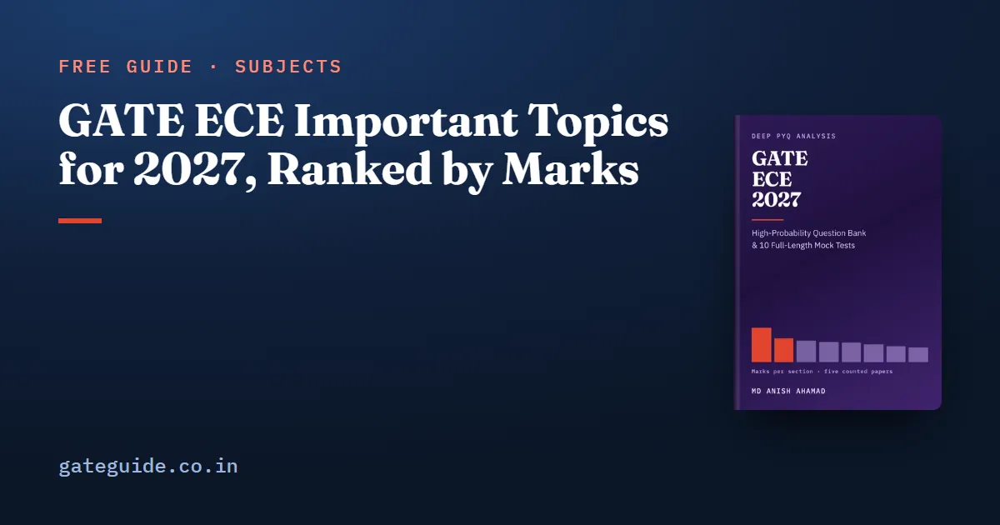

GATE ECE Important Topics for 2027, Ranked by Marks

The useful order for GATE Electronics and Communication preparation is not the order the syllabus prints. It is the order the marks land in. Counted question by question across five EC papers — 2010, 2019, 2020, 2025 and 2026 — Networks, Signals and Systems is the largest technical section at a mean of 17.0 marks, and Electromagnetics the smallest at 7.4.
In this guide
Inside those sections, importance means something narrower and more checkable: how many of the five counted papers contain the concept, and how many questions it accounts for. This guide gives both, with question numbers, and says plainly where the evidence is one paper deep.
Key takeaways
- Study by counted marks, not syllabus order. The section means run 17.0, 12.0, 10.8, 10.0, 9.8, 8.8, 8.0, 7.4, with General Aptitude fixed at 15.
- Seventy-eight concepts appear in two or more of the five counted papers. Seventeen appear in four or five. Those seventeen are where preparation should start and the last thing to cut.
- Recurrence beats one good year. A concept in four papers with six questions is a stronger signal than a concept in two papers with the same six.
- Small sections are not cheap sections. Control Systems asks 4.8 questions a paper at 1.67 marks each, the heaviest questions in the paper.
- Two of the most talked-about 2027 topics rest on a single paper. Where that is true, this guide says so rather than dressing it up as a trend.
Start with the sections, in mark order
| Block | Sections | Combined mean marks |
|---|---|---|
| First | Networks, Signals and Systems (17.0) and Engineering Mathematics (12.0) | 29.0 |
| Second | Analog Circuits (10.8), Communications (10.0), Digital Circuits (9.8) | 30.6 |
| Third | Electronic Devices (8.8), Control Systems (8.0), Electromagnetics (7.4) | 24.2 |
| Fixed | General Aptitude | 15.0 |
Two cautions come with that order. Networks tops the technical table in 2010, 2019, 2020 and 2026, but not in 2025, when Engineering Mathematics took 15 marks and Networks 13. And the third block is not optional: in 2019, the one counted paper set by IIT Madras, its three sections were worth 11, 9 and 9 marks, the highest combined figure in the counted record. General Aptitude sits outside all of this at exactly 15 marks in every counted paper, and is handled in the General Aptitude guide.
What "important" means here
Two numbers, both countable, both printed with the question numbers behind them.
P — how many of the five counted papers contain the concept, from 0 to 5. This is the primary measure, and the most checkable claim anywhere in the analysis: to disprove a P you only have to open one of the named papers and find that it does not contain what the map says it does.
Q — how many counted questions in total. P and Q answer different questions. P asks whether a concept keeps coming back; Q asks how heavily it is loaded when it does. A concept with and recurs. A concept with and had one very good year, which is a different fact about a different kind of topic — and the reason question counts are capped at two per paper present before anything is ranked.
On P, the 78 recurring concepts fall into three tiers:
| Tier | In how many of the five counted papers | Concepts | Suggested time each |
|---|---|---|---|
| Tier 1 | 4 or 5 | 17 | 4–5 hours |
| Tier 2 | 3 | 23 | 2–3 hours |
| Tier 3 | 2 | 38 | 40–60 minutes |
Those hours assume roughly 175 hours of technical study, which is what 27 working days at six and a half hours comes to once General Aptitude is set aside. If the time is shorter, cut from the bottom of Tier 3 upwards. Tier 1 is not cut.
The ten concepts that recur most
Every row below is present in four or five of the five counted papers. is papers of five; is counted questions.
| Concept | Section | P | Q | Counted questions |
|---|---|---|---|---|
| Phasor analysis of an AC network: a branch current or an unknown element value | Networks | 5 | 7 | 2010 Q33; 2019 Q40; 2020 Q26, Q38; 2025 Q20, Q39; 2026 Q39 |
| z-transform: ROC, poles and zeros, causality and stability | Networks | 5 | 7 | 2010 Q14, Q42; 2019 Q13; 2020 Q24, Q63; 2025 Q27; 2026 Q16 |
| MAP and ML detection, bit- or symbol-error probability | Communications | 5 | 6 | 2010 Q55; 2019 Q44, Q57; 2020 Q58; 2025 Q41; 2026 Q44 |
| Two-port networks: parameter matrix, reciprocity | Networks | 5 | 5 | 2010 Q4; 2019 Q14; 2020 Q25; 2025 Q40; 2026 Q51 |
| Angle modulation: instantaneous frequency, deviation, PM and FM | Communications | 5 | 5 | 2010 Q21; 2019 Q32; 2020 Q57; 2025 Q14; 2026 Q57 |
| Ideal-diode networks: clipping, clamping, rectifiers | Analog | 4 | 6 | 2019 Q34, Q62; 2020 Q27; 2025 Q57, Q61; 2026 Q65 |
| LTI properties: linearity, time invariance, causality, stability | Networks | 4 | 6 | 2010 Q42; 2020 Q15; 2025 Q17, Q27; 2026 Q16, Q47 |
| Op-amp linear circuits solved by the virtual short | Analog | 4 | 6 | 2010 Q10; 2020 Q28; 2025 Q29; 2026 Q17, Q53, Q62 |
| Sequential elements: flip-flops, counters, shift registers | Digital | 4 | 6 | 2010 Q37; 2019 Q35; 2025 Q45; 2026 Q27, Q35, Q49 |
| BJT single-stage small-signal amplifiers | Analog | 4 | 5 | 2010 Q9, Q48; 2020 Q45; 2025 Q21; 2026 Q50 |
Read the pattern, not just the rows. Four of the ten are Networks concepts and three are Analog, which is the same finding the section means give, arrived at from the other direction. Rows also overlap: 2026 Q16 counts under both the z-transform and LTI properties, so studying one buys part of the other.
Where the evidence is one paper deep
Three items get talked about far more confidently than five papers permit, and each is flagged here for the same reason.
FIR and IIR filter design. Newly named in the 2027 syllabus, and it does have precedent: GATE 2019 Q39 and Q54 are both filter-design questions, both worth 2 marks. They are also both in the same paper, which makes this one paper in five, not a rate. What lifts it above noise is that 2019 was set by IIT Madras, the institute setting GATE 2027. Prepare the design idea — placing a zero on the unit circle to null a frequency, and fitting a short filter by least squares — and treat any marks figure attached to it as a guess.
Concepts with a high question count from one paper. Static CMOS has six counted questions, but five of the six are in the 2019 paper alone. Uncapped, one paper's enthusiasm for one topic would outrank a pattern spread across four papers. That is exactly why question credit is capped before ranking, and why P is the number to read first.
The institute signal itself. 2019 is the flattest paper in the counted record, with every technical section between 9 and 14 marks, against spreads of 9 to 15 marks in the other four. It is tempting to conclude that IIT Madras writes flat papers. One paper cannot distinguish a house style from an ordinary year that came out flat, and there is no second IIT Madras paper in the counted record to test it against. The usable form of that observation is negative: do not build a plan that needs a section to be skippable.
More generally, five papers is five observations. A concept asked roughly once every eight years can score zero across five papers by arithmetic alone, and the papers sitting between the counted years are not counted and are not used here. Absence over five papers is genuine evidence and it is weak evidence.
Small sections are not cheap sections
Dividing each section's five-paper mark total by its five-paper question total gives the average price of one question.
| Section | Questions per paper | Marks per question |
|---|---|---|
| Control Systems | 4.8 | 1.67 |
| Electronic Devices | 5.4 | 1.63 |
| Analog Circuits | 6.8 | 1.59 |
| Communications | 6.4 | 1.56 |
| Digital Circuits | 6.4 | 1.53 |
| Networks, Signals and Systems | 11.2 | 1.52 |
| Electromagnetics | 5.0 | 1.48 |
| Engineering Mathematics | 8.2 | 1.46 |
Control Systems gives you the fewest chances in the paper and charges the most for each. Two-thirds of its counted items are worth 2 marks. Electronic Devices is close behind. The practical consequence is that a thin pass over everything works in Engineering Mathematics, where 12 marks are spread over more and cheaper questions, and fails in Control Systems, where four or five questions carry the section.
Practise each section in its own format mix
Pooled across the five counted papers the whole paper is 70.2 per cent multiple choice, but no section is average. Communications is exactly 50.0 per cent, Analog Circuits 55.9, Engineering Mathematics 58.5, Electromagnetics 60.0, Electronic Devices 66.7, Digital Circuits 68.8, Control Systems 70.8 and Networks 76.8.
That 27-point spread is not a stylistic detail. Multiple choice is where a wrong attempt is penalised and where working backwards from the options is legitimate. Numerical-answer questions offer neither the penalty nor the shortcut, and cost calculator time, which is worth rehearsing with the on-screen calculator. Multiple-select questions punish the habit of stopping at the first option that works. Practising every section to one figure over-trains elimination in Communications by twenty points of format mix.
A study order that follows the marks
Work the first block, Networks and Engineering Mathematics, until the Tier 1 concepts in them are automatic rather than reconstructed. Take the middle block next, because Analog Circuits, Communications and Digital Circuits are worth more between them than the first block and move the most between papers. Cover the third block properly but cheaply: on the counted evidence it is 24.2 marks that punishes neglect and rewards competence rather than depth.
Then keep the ranges in view alongside the means. Digital Circuits ran 6 to 13 marks across the counted papers, Engineering Mathematics 9 to 15, Networks 13 to 21. A plan built on means alone is a plan built on a paper nobody has set. The ECE book ranks all 78 recurring concepts with the question numbers behind each one, the per-topic maps for all nine chapters, and mock tests built to the counted shape of the paper. Once you have a target in mind, how the GATE score is calculated shows what those marks become, and the exam dates guide gives you the calendar to work back from.
Frequently asked questions
Which topics are most important for GATE ECE 2027?
By counted marks, Networks, Signals and Systems comes first at a mean of 17.0 marks across five papers, then Engineering Mathematics at 12.0 and Analog Circuits at 10.8. Inside those sections the concepts present in four or five of the five counted papers are the ones to finish first, starting with phasor analysis and the z-transform.
How many topics should I actually prepare for GATE ECE?
Seventy-eight concepts appear in two or more of the five counted papers. Seventeen of them appear in four or five papers, twenty-three in three, and thirty-eight in two. Finishing the seventeen first is the highest-value decision available, because on the counted evidence they are the ones that keep coming back.
Can I leave out a whole section in GATE ECE?
The counted record argues against it. The smallest technical section by mean is Electromagnetics at 7.4 marks, and its counted range is 6 to 9, so it never vanished. In 2019, the one counted paper set by the institute setting GATE 2027, every technical section landed between 9 and 14 marks. No section was droppable that year.
Which GATE EC topics need numerical practice rather than option elimination?
Communications and Analog Circuits. Pooled across the five counted papers, Communications is exactly 50 per cent multiple choice and Analog Circuits 55.9 per cent, against 76.8 per cent for Networks. In the low-MCQ sections a large minority of questions give you nothing to eliminate, so practise those to a number.
Is FIR filter design an important topic for GATE ECE 2027?
It is newly named in the 2027 syllabus and it has precedent, but the evidence is one paper deep. GATE 2019 Q39 and Q54 are both filter-design questions, both worth 2 marks, and 2019 was set by IIT Madras, the institute setting GATE 2027. Two questions in one paper is a precedent, not a rate.
How should I order my GATE ECE preparation?
Follow the counted means rather than the syllabus order. Networks and Engineering Mathematics first as a 29-mark block, then the middle group of Analog Circuits, Communications and Digital Circuits at 30.6 marks combined, then Electronic Devices, Control Systems and Electromagnetics at 24.2. General Aptitude is a fixed 15 marks and is worked separately.
Sources
- GATE 2027 official website (IIT Madras)
- GATE 2026 EC question paper (IIT Guwahati)
- GATE 2026 EC answer key (IIT Guwahati)
- GATE 2025 EC question paper (IIT Roorkee)
- GATE 2020 EC question paper with answer key (IIT Delhi)
- GATE 2019 EC question paper with answer key (IIT Madras)
Dates, fees and the syllabus are set by the GATE 2027 organising institute and can change. Always confirm at gate2027.iitm.ac.in.